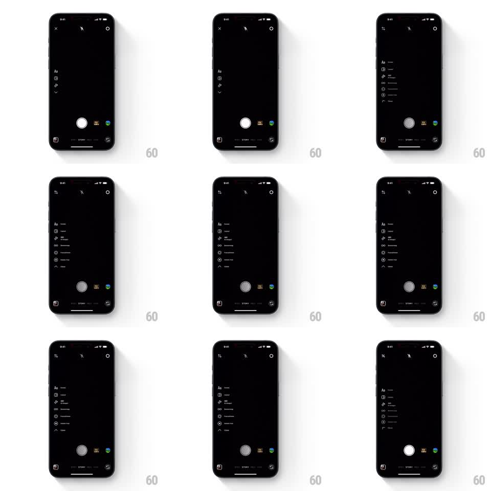

Media
Frame-by-frame

Rebuild this interaction 1:1: Instagram Stories' camera tool menu - the left rail expands vertically into a full labeled tool list and collapses back to compact icons with a smooth rolling transition.

Rebuild this interaction 1:1: Instagram Stories' camera tool menu - the left rail expands vertically into a full labeled tool list and collapses back to compact icons with a smooth rolling transition. ## Integration Integration: stack-agnostic spec - springs given as stiffness/damping, timed motions as duration + curve; map every value to your framework and animation library of choice. ## Scene The Instagram Story camera (dark viewfinder, shutter bottom center). The left edge holds a compact vertical rail of tool icons (Create Aa, Layout, Boomerang, Hands-free, and a chevron). Tapping the chevron expands the rail into a full menu: each tool icon gains its text label in a vertical list. Tapping again collapses it back to bare icons. ## Motion spec Pattern: vertical menu expand/collapse, ~400ms each way. - On expand, the rail grows into the menu from its top item down: rows reveal in a rolling stagger (25ms apart, each fading and sliding 8px right, 250ms), labels drawing in next to their icons. - The chevron flips 180 degrees over the expansion (300ms). - On collapse, the motion reverses: labels fade and rows roll up from bottom to top (25ms stagger, 200ms), ending on the compact rail. - The viewfinder and shutter stay live and static throughout. ## Calibration - The stagger direction matters: expand top-down, collapse bottom-up - a roll, not a uniform fade. - Row heights animate smoothly (the menu grows in height), not an instant swap. ## Reduced motion Menu crossfades between compact and expanded states. ## Don't miss - The rail stays pinned to the left edge at every stage - only its width and contents change. - Icons never move horizontally between states; only labels appear and disappear.